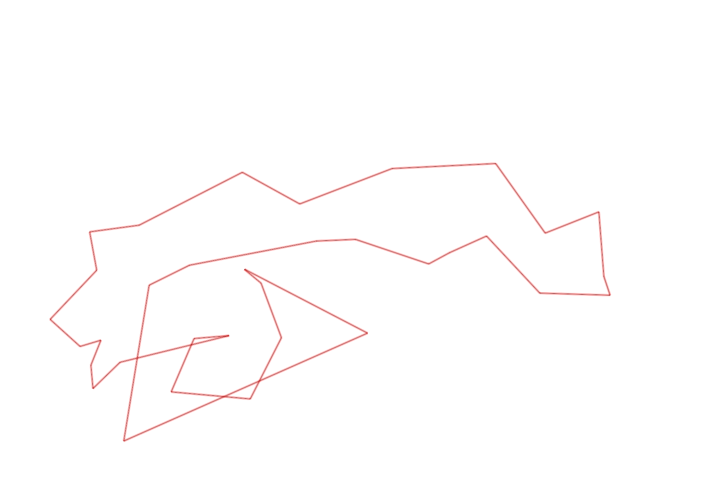
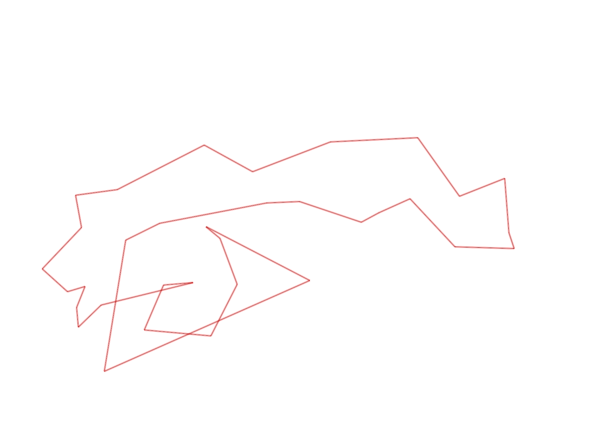

| Control |
Points |
Time Punched |
Distance |
Your Time |
Pace |
Place |
Fastest Time |
Median Time |
% Behind Fastest |
| 127 |
20 |
|
0.06 |
0:00:05 |
01:23 |
4 / 30 |
0:00:01 |
0:00:32 |
400% |
| 42 |
40 |
|
0.17 |
0:01:06 |
06:28 |
1 / 20 |
0:01:06 |
0:01:52 |
0% |
| 61 |
60 |
|
0.21 |
0:02:20 |
11:06 |
1 / 20 |
0:02:20 |
0:03:34 |
0% |
| 59 |
50 |
|
0.24 |
0:01:54 |
07:55 |
2 / 19 |
0:01:47 |
0:02:30 |
6% |
| 60 |
60 |
|
0.17 |
0:01:44 |
10:11 |
2 / 2 |
-1 day, 23:03:37 |
-1 day, 23:32:40 |
-99% |
| 38 |
30 |
|
0.11 |
0:00:31 |
04:41 |
3 / 15 |
0:00:00 |
0:01:15 |
-% |
| 41 |
40 |
|
0.34 |
0:01:53 |
05:32 |
1 / 1 |
0:01:53 |
0:01:53 |
0% |
| 40 |
40 |
|
0.11 |
0:00:50 |
07:34 |
5 / 24 |
0:00:45 |
0:01:00 |
11% |
| 71 |
70 |
|
0.07 |
0:00:34 |
08:05 |
1 / 12 |
0:00:34 |
0:01:00 |
0% |
| 54 |
50 |
|
0.08 |
0:00:27 |
05:37 |
1 / 33 |
0:00:27 |
0:00:45 |
0% |
| 69 |
60 |
|
0.07 |
0:01:00 |
14:17 |
1 / 20 |
0:01:00 |
0:01:56 |
0% |
| 53 |
50 |
|
0.12 |
0:01:16 |
10:33 |
1 / 26 |
0:01:16 |
0:01:51 |
0% |
| 44 |
40 |
|
0.2 |
0:00:39 |
03:15 |
1 / 22 |
0:00:39 |
0:01:40 |
0% |
| 32 |
30 |
|
0.12 |
0:00:51 |
07:05 |
2 / 22 |
0:00:43 |
0:01:19 |
18% |
| 63 |
60 |
|
0.15 |
0:01:05 |
07:13 |
1 / 25 |
0:01:05 |
0:01:29 |
0% |
| 107 |
100 |
|
0.35 |
0:02:14 |
06:22 |
1 / 22 |
0:02:14 |
0:03:49 |
0% |
| 57 |
50 |
|
0.2 |
0:02:33 |
12:45 |
5 / 22 |
0:01:54 |
0:03:53 |
34% |
| 123 |
20 |
|
0.3 |
0:03:31 |
11:43 |
1 / 2 |
0:03:31 |
0:04:05 |
0% |
| 109 |
100 |
|
0.31 |
0:02:09 |
06:56 |
1 / 7 |
0:02:09 |
0:02:32 |
0% |
| 52 |
50 |
|
0.26 |
0:02:01 |
07:45 |
1 / 6 |
0:02:01 |
0:02:27 |
0% |
| 81 |
80 |
|
0.17 |
0:01:42 |
10:00 |
1 / 4 |
0:01:42 |
0:01:44 |
0% |
| 56 |
50 |
|
0.19 |
0:01:44 |
09:07 |
1 / 3 |
0:01:44 |
0:01:51 |
0% |
| 75 |
70 |
|
0.06 |
0:01:21 |
22:30 |
4 / 4 |
0:00:30 |
0:00:48 |
170% |
| 46 |
40 |
|
0.21 |
0:01:20 |
06:20 |
1 / 4 |
0:01:20 |
0:01:53 |
0% |
| 49 |
40 |
|
0.23 |
0:01:50 |
07:58 |
1 / 6 |
0:01:50 |
0:02:11 |
0% |
| 64 |
60 |
|
0.12 |
0:01:00 |
08:20 |
7 / 8 |
0:00:53 |
0:00:55 |
13% |
| 48 |
40 |
|
0.07 |
0:00:38 |
09:02 |
3 / 9 |
0:00:34 |
0:00:47 |
11% |
| 47 |
40 |
|
0.23 |
0:01:44 |
07:32 |
1 / 4 |
0:01:44 |
0:02:35 |
0% |
| 92 |
90 |
|
0.12 |
0:04:51 |
40:25 |
9 / 10 |
0:01:21 |
0:03:13 |
259% |
| 126 |
20 |
|
0.39 |
-1 day, 23:15:07 |
59:37:13 |
1 / 3 |
-1 day, 23:15:07 |
0:04:00 |
0% |
| 130 |
30 |
|
0.14 |
0:00:00 |
00:00 |
1 / 19 |
0:00:00 |
0:00:33 |
-% |
| 77 |
70 |
|
0.47 |
0:00:00 |
00:00 |
1 / 1 |
0:00:00 |
0:00:00 |
-% |
| 37 |
30 |
|
0.8 |
0:00:00 |
00:00 |
1 / 1 |
0:00:00 |
0:00:00 |
-% |
| Finish |
0 |
|
0.42 |
0:59:50 |
2:22:27 |
1 / 1 |
0:59:50 |
0:59:50 |
0% |
Total Distance Covered: 7.26km
Points Scored: 1680
Late Penalty: 0
Final Score: 1680
Total Time: 0hours 59minutes 50seconds
Efficiency: 231.4 points/km
 
